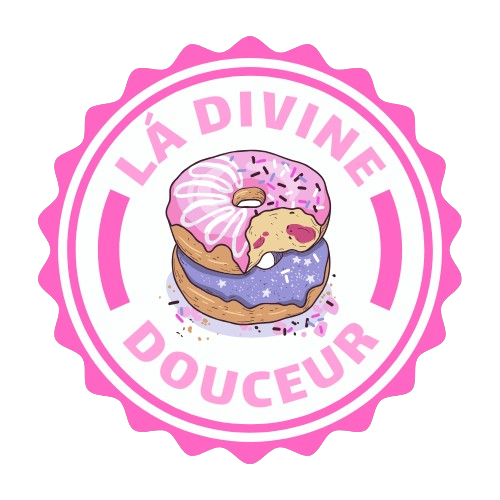

Site de Artigos Científicos
Site de artigos científicos feito para um projeto da faculdade de Foz do Iguaçu.
Next.js
TypeScript
Tailwind
Ver Mais arrow_forward
Uma exibição técnica de soluções robustas e arquitetura de software de alta performance.
Site de artigos científicos feito para um projeto da faculdade de Foz do Iguaçu.

Portifólio para uma empresa de marketing audiovisual.

Site de uma empresa de donuts artesanais chamada "Lá Divine Douceur"
Mantemos padrões rigorosos de SOLID e Clean Code em todos os projetos apresentados.
Otimização de Web Vitals para garantir a melhor experiência de usuário e SEO.